The baseline is a working single-pass RAG pipeline. The four-week build adds hybrid retrieval, an authority resolver and a critic loop without changing the promise: every sentence that states coverage must be traceable to a clause.
What already runs today, measured on the local corpus.
| Layer | Implementation |
|---|---|
| Collection | Official-domain crawler, robots fail-closed, SHA-256 manifest, sidecar metadata per document |
| Index | ChromaDB, cosine distance, 45,844 chunks from 923 source files |
| Embeddings | BGE-small-en-v1.5 (384 dimensions), local or hosted |
| Retrieval | Dense search plus chunk-type routing and heuristic rerank |
| Generation | Qwen3-8B via OpenAI-compatible API, or qwen2.5:7b via local Ollama |
| Guardrails | Constitutional prompt, refusal rules, leak sanitiser, banned-pattern check |
| Claim risk | Rule engine, 4 of 6 configured rules implemented |
| Interfaces | Streamlit client; FastAPI service with /ask, /predict, /insurers, /health |

Current pipeline: crawl, parse, chunk, embed, retrieve, generate.
Six agents around one retrieval core. The router decides what kind of question this is; the resolver establishes which documents are authoritative; the critic verifies that the composed answer is supported.
Planner → executor → critic, with a bounded step budget and a trace for every step.
The current prototype has four trust-breaking corpus defects — a residual demo policy in the production collection, vector IDs that collide across documents, a catalogue that has drifted from the vector store, and lossy document-type mapping. Closing them is Gate G1 of the plan, because no accuracy number measured before that is meaningful.